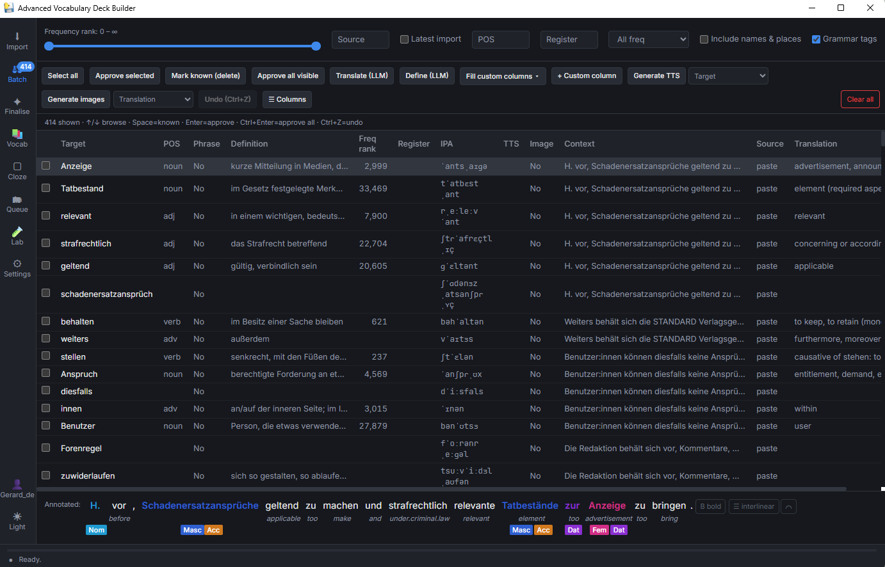
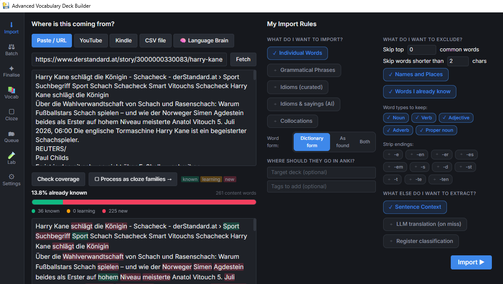
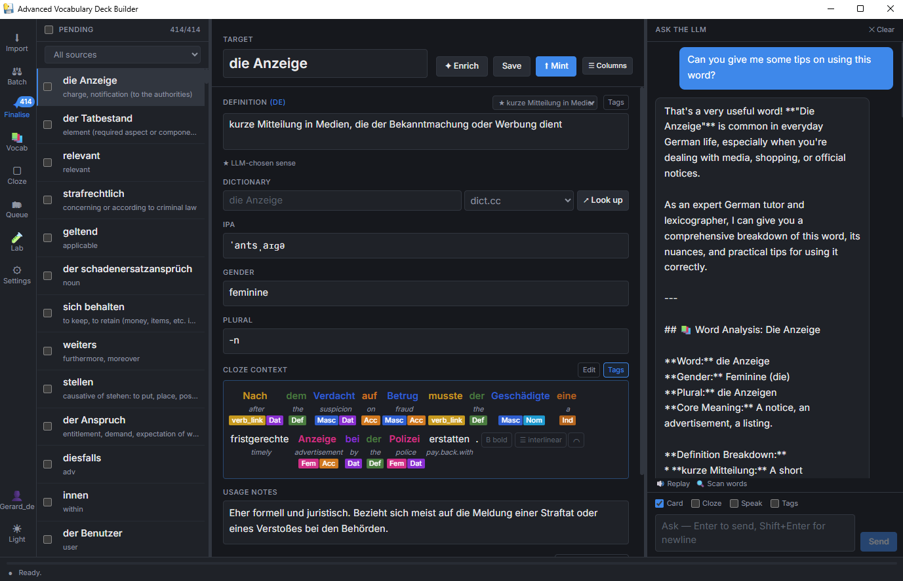
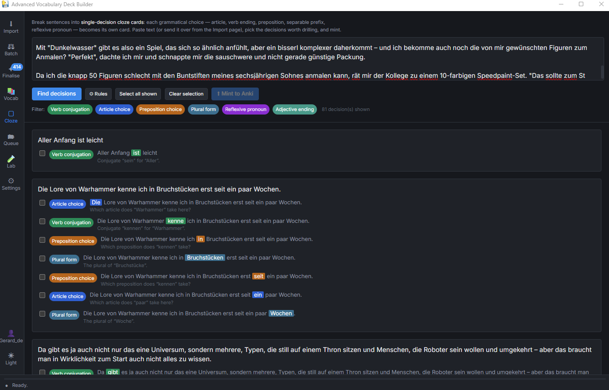
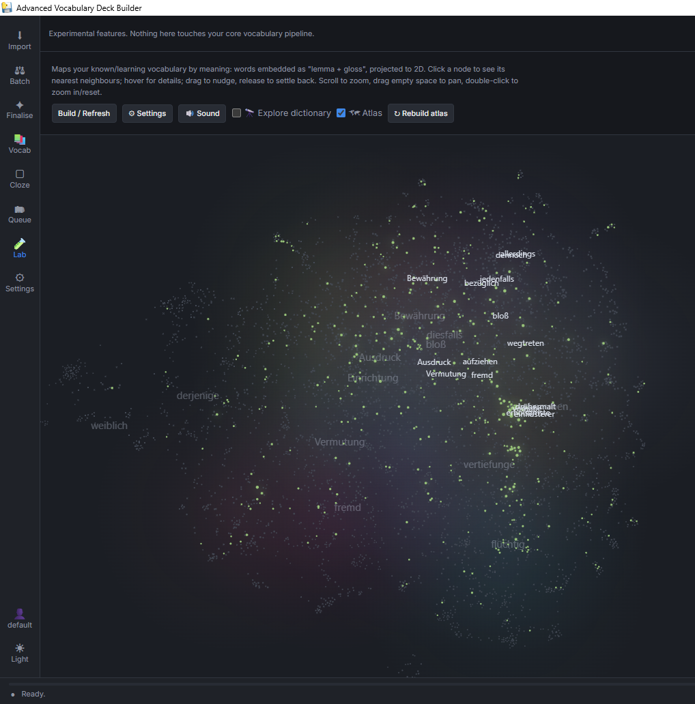

A vocabulary mining engine for advanced learners. It reads your sources, hides the words you already know, and lets you quickly review and approve the rest into Anki.

Advocab is built around one idea: most words aren't worth your attention, and the few that are deserve a great card. It gets you there in five stages.
Kindle look-ups, pasted text, YouTube captions, article URLs, CSV.
spaCy lemmatises, then a frequency filter drops what you already know.
A built dictionary fills gloss, gender & plural; a local LLM mines idioms.
Keyboard-driven review — keep, skip, or approve in a few keystrokes.
Approved cards mint straight to Anki as polished cloze notes.
The LLM is reserved for what it's actually good at — mining idioms and writing mnemonics. Everything else is fast, local, and repeatable.
Your vocabulary, databases and API keys live on your own disk. Nothing is uploaded. Works fully offline once set up.
Translation, gender and plural come from a dictionary built from Wiktextract — no LLM guesswork, stable run to run.
A local Ollama model reads whole sentences to surface set phrases like jemandem ins Auge fallen that a word filter would miss.
Space = I know it, Enter = approve, Ctrl+Z = undo. Review hundreds of candidates in minutes.
German out of the box, plus French, Spanish, Italian, Portuguese, Russian, Dutch and experimental CJK — each with its own profile.
The blank is placed deterministically in the original sentence — umlaut-tolerant, handles inflection and split idioms like fiel … ins Auge.
Lemmatization, embeddings, image generation and voice synthesis install from inside the app only if you want them — skip anything you don't need.
An interactive map of your vocabulary by meaning — see clusters, gaps, and what you already know at a glance.
Mints rich cloze notes via AnkiConnect — word, translation, grammar, gender, plural, example, mnemonic, audio and source.
Every stage of the pipeline is a page you navigate from the left rail. Here's what each one looks like in practice.
Paste an article URL, drop in text, load your connected Kindle's look-up history, or import a CSV. Check coverage before you commit — Advocab shows exactly how much of the text you already know and highlights new words in context.

A sortable, filterable table of everything that passed the gatekeeper. Each row shows definition, IPA, frequency rank, register and source. Focus a word and the original sentence appears at the bottom with a grammar-tagged interlinear strip — full context before you decide.
A three-pane editor: your pending cards on the left, a full field editor in the middle, and "Ask the LLM" on the right for a better sense, a mnemonic, or a rewritten example. Review the grammar-annotated cloze context, generate audio or an image, then mint to Anki.

Paste any text and Advocab finds every grammatical decision point — article choice, verb conjugation, preposition, plural form, adjective ending. Each becomes its own targeted cloze card. Pick the patterns worth drilling and mint them straight to Anki.

Every word you've studied, laid out by meaning in a zoomable galaxy. Pan and click any node to see its nearest semantic neighbours. Switch to State of Your German for a live CEFR depth estimate, frequency-band coverage, and reachable reading levels — updated every time you open it.

A deliberately lean installer. The heavy, optional pieces — spaCy language models, sentence-transformers, PyTorch for image generation, and voice synthesis — install from inside the app only when you ask for them. Start mining vocabulary straight away.
Five steps. The first three take a couple of minutes; the LLM and Anki steps are only needed for idiom mining and exporting.
Grab the installer below and run it. It installs per-user to your %LOCALAPPDATA% folder — no admin rights required. Windows may need the free WebView2 runtime, which the installer sets up for you.
The window opens straight away. A setup wizard asks for your target language and offers to download its spaCy model (~45 MB) and frequency list, then builds the dictionary. Pick German, French, Spanish and more.
Paste a paragraph, fetch an article URL, or read your Kindle look-ups on the Import page. Hit Check coverage to preview, then Import to stage candidates for review.
For idiom mining and card enrichment, run Ollama locally and pull a model (ollama pull gemma4:e2b). Single-word import works without it.
Have Anki open with the AnkiConnect add-on. Approve cards in Batch, polish in Finalise, and they mint straight into your deck.
Open Settings → AI Extras to install lemmatization, embeddings, image generation or voice — each downloads into a sidecar and lights up without a restart. Skip anything you don't need.
A single installer, everything on your own machine — no account, no cloud, no telemetry. Add the heavy AI extras later, from inside the app, only if you want them.
No. Advocab is local-first: your vocabulary databases, config and any API keys live on your own disk. It works fully offline once set up. If you choose to point it at a cloud LLM, only the text you send for enrichment goes to that provider — everything else stays local.
Neither is required. The core mining pipeline is deterministic and runs on CPU. For idiom mining you can run a free local model with Ollama. A cloud LLM key is optional, and image/voice generation extras are entirely opt-in.
German is the default and most polished. French, Spanish, Italian, Portuguese, Russian and Dutch are supported, with experimental Japanese, Chinese and Korean. Each language is its own profile with separate databases.
The Lite build deliberately ships nothing language- or ML-specific. Lemmatization models, embeddings, image generation and voice install on demand from Settings → AI Extras into a sandboxed sidecar environment — so you only download what you'll actually use.
Anki is the export target and where you ultimately study, but you can import, review and finalise cards without it open. Cards mint to Anki when you have it running with the AnkiConnect add-on.
No. It installs per-user into your %LOCALAPPDATA% folder and keeps its databases and generated media right beside the app, so upgrades and uninstalls are clean.